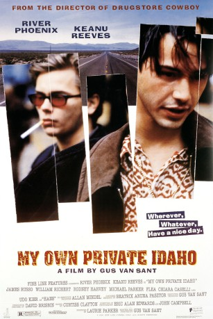

#6448 Das Ende der Unschuld
Alternativ: My Own Private Idaho
 
 IMDB-Wertung: 7.1 / 10
IMDB-Wertung: 7.1 / 10  Metascore: 0
Metascore: 0 
Mike Waters lives on the street and befriends the somewhat older and streetwise Scott Favor who shows him what is necessary to survive. Waters suffers from narcolepsy and can fall asleep at any moment and in almost any circumstance. Favor comes from a rich family and is rebelling against his own background. They travel together extensively - Waters is driven by the need to find his biological mother - and spend time in Italy. Later in life however, Favor has joined mainstream society and has little time for his old friend.
Jahr: 1991
Dauer: 99 Minuten
FSK: 16
Land: USA Studio: Fine Line FeaturesTonspuren: DD5.1 - ,
Untertitel:
Auflösung: 1080p (1920x1040) Größe: 8407 MB
Genre: Drama
Regisseur:  Gus Van Sant
Gus Van Sant
Drehbuch: Gus Van Sant
Soundtrack:
Darsteller:
 River Phoenix als Mike Waters
River Phoenix als Mike Waters Keanu Reeves als Scott Favor
Keanu Reeves als Scott Favor James Russo als Richard Waters
James Russo als Richard Waters- William Richert als Bob Pigeon
- Chiara Caselli als Carmella
 Flea als Budd
Flea als Budd Grace Zabriskie als Alena
Grace Zabriskie als Alena Udo Kier als Hans
Udo Kier als Hans- Mickey Cottrell als Daddy Carroll
- Brian Wilson als Rock Promoter
 Jim Caviezel als Airline Clerk
Jim Caviezel als Airline Clerk- Heather J. Braden als Yuppie at Jake's , uncredited
- Gus Van Sant als Man Behind Hotel Counter , uncredited
- Rodney Harvey als Gary
- Michael Parker als Digger
- Jessie Thomas als Denise
- Tom Troupe als Jack Favor
- Sally Curtice als Jane Lightwork
- Robert Lee Pitchlynn als Walt
- Wade Evans als Wade
- Matthew Ebert als Coverboy
- Scott Patrick Green als Coverboy / Cafe Kid
- Tom Cramer als Coverboy
- Vana O'Brien als Sharon Waters
- Shaun Jordan als Cafe Kid
- Shawn Wight als Cafe Kid
- George Conner als Bad George
- Oliver Kirk als Indian Cop
- Stanley Hainsworth als Dirtman
- Joshua Halladay als Baby Mike
- Douglas Tollenen als Little Richard
- Steven Clark Pachosa als Hotel Manager
- Lannie Swerdlow als Disco Manager
- Wally Gaarsland als Rock Promoter
- Mark Weaver als Rock Promoter
- Conrad 'Bud' Montgomery als Rock Promoter
- Pat Patterson als Cop
- Steve Vernelson als Cop
- Mike Cascadden als Cop
- Eric Hull als Mayor's Aide
- James A. Arling als Minister
- Ana Cavinato als Stewardess
- Melanie Mosely als Lounge Hostess
- Greg Murphy als Carl
- David Reppinhagen als Yuppie at Jake's
- Tiger Warren als Himself
- Massimo Di Cataldo als Italian Street Boy
- Pao Pei Andreoli als Italian Street Boy
- Robert Egon als Italian Street Boy
- Paolo Baiocco als Italian Street Boy
Datei: X:\1991\Ende der Unschuld, Das (1991, FSK16, 1920x1040).mkv seit 22.06.2017
Festplatte: HD 1987-1991
 Es gibt insgesamt 53 Filme in der Gruppe '1991'
Es gibt insgesamt 53 Filme in der Gruppe '1991'